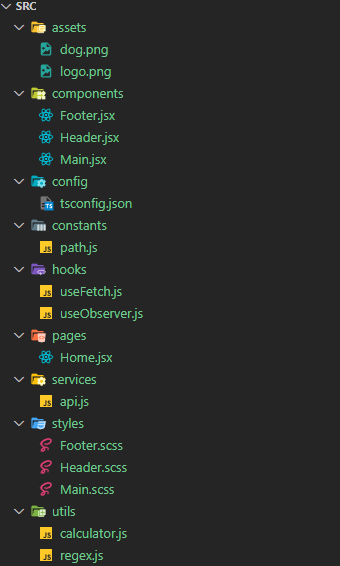

CRA의 초기 폴더구조
my-app
├── node_modules
├── public
├── src
├── .gitignore
└── package.json- node_modules
- 현재 프로젝트에 포함된 라이브러리들이 설치되어 있는 폴더로 보통
깃과 같은 저장소에 올릴 때는 이 폴더를 함께 올리지 않습니다.
- 현재 프로젝트에 포함된 라이브러리들이 설치되어 있는 폴더로 보통
- public
- index.html과 같은 정적 파일이 포함되는 곳으로 컴파일이 필요 없는 파일들이 위치하는 폴더
- src
리액트 내부에서 작성하는 거의 모든 파일들이 이 폴더 내부에서 작성되며 이 폴더에 있는 파일들은 명령어에 따라 JS로 컴파일이 진행
- .gitignore
- 깃에 포함하고 싶지 않은 파일의 이름 혹은 폴더등을 입력하는 파일
- package.json
- 프로젝트에 관련된 기본적인 내용(프로젝트의 이름, 버전 등)과 라이브러리들의 목록이 포함됨.
- 라이브러리가 설치된 node_modules 대신에 이 package.json을 깃에 포함하여 올리게 되며 후에 누군가가 프로젝트를 클론할 때 이 package.json에 적혀있는 라이브러리의 목록을 기준으로 npm에서 설치가 됨.
src 내부 폴더구조
└─ src
├─ components
├─ assets
├─ hooks (= hoc)
├─ pages
├─ constants
├─ config
├─ styles
├─ services (= api)
├─ utils
├─ contexts
├─ App.js
└─ index.js
components
- 역할:
재사용 가능한 컴포넌트들이 위치하는 폴더 - 구조: 컴포넌트의 수가 많아질 수 있으므로, 내부에서 하위 폴더로 세분화하여 관리하는 것이 일반적임.
assets
- 역할: 이미지, 폰트 등 정적 파일들이 저장되는 폴더
- 주의사항:
assetsvspublic- 이미지 파일을
public에 직접 넣을 수도 있지만, 두 폴더의 차이는 컴파일 시 필요한지 여부 public: 컴파일 단계에서 필요하지 않고,index.html등에서 직접 참조되는 파일(예: 파비콘)을 저장assets: 컴포넌트 내부에서 사용되며, 컴파일 과정에서 필요한 이미지나 폰트 파일을 저장
- 이미지 파일을
hooks (또는 hoc)
- 역할: 커스텀 훅(Custom Hooks)이 위치하는 폴더
- 활용: 복잡한 로직을 재사용 가능하게 추출하여 컴포넌트 간에 공유할 때 사용
pages
- 역할: 라우팅을 적용할 때 사용되는 페이지 컴포넌트들이 위치하는 폴더
- 구성: 각 페이지별로 디렉토리를 구성하여 해당 페이지와 관련된 컴포넌트, 스타일 등을 관리
constants
- 역할: 공통적으로 사용되는 상수들을 정의한 파일들이 위치하는 폴더
- 예시: 액션 타입, API 엔드포인트, 애플리케이션에서 사용하는 고정 값 등을 포함.
config
- 역할:
설정 파일들이 위치하는 폴더 - 구성: 설정 파일이 많지 않다면 최상위 디렉토리에 둘 수 있지만, 여러 개일 경우 폴더로 분리하여 관리
styles
- 역할: 전역 스타일이나 테마 설정 등
CSS 파일들이 포함되는 폴더 - 활용: 공통적으로 사용되는 스타일 시트나 스타일 관련 유틸리티를 관리
api
- 역할: API 호출 관련 로직이 위치하는 폴더
- 내용: 인증(auth)과 같은 인증 로직이나 외부 서비스와의 통신을 처리하는 파일들이 포함
utils
- 역할:
정규표현식 패턴, 날짜 포맷팅, 공통 함수 등 유틸리티 기능을 제공하는 파일들이 위치하는 폴더 - 활용: 여러 곳에서 반복적으로 사용되는 로직을 모듈화하여 관리
contexts
- 역할: Context API를 사용할 때 관련 파일들이 위치하는 폴더
- 대안: 상태 관리를 위해 Context API 대신 Redux를 사용하는 경우, 이 폴더를
store로 명명하고 Redux 관련 파일들을 포함시킴